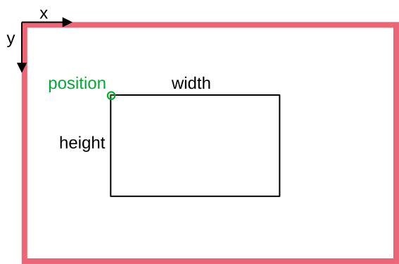

|
Thermal Camera SDK 10.1.0
SDK for Optris Thermal Cameras
|
|
Thermal Camera SDK 10.1.0
SDK for Optris Thermal Cameras
|
The following UML diagram illustrates the class structure of the public SDK API. All the details about the class members are omitted to ensure it is clear and easy to understand.

A number of design patterns are employed to make the API easy to use. They include but are not limited to
Observers (red)
The SDK features two Observer structures. The most important one is constituted by the IRImager interface and the IRImagerClient. Each IRImager instance represents a single thermal camera and its interface defines how you can interact with it. By registering a child class of the IRImageClient with the addClient() method you can receive processed thermal frames, flag states and other status information. To process this data implement the corresponding callback methods defined by the IRImagerClient in your child class.
The EnumerationManger uses the same pattern to inform EnumerationClient classes of newly attached or removed devices.
Both client classes feature empty default implementations for the callbacks they define. Therefore, you only need to override the callbacks that you need.
Factories (green)
Factories encapsulate the instantiation of classes. The public API features two such factories: The first one is the IRImagerFactory that creates objects of classes that implement the IRImager interface based on a provided string. By requesting a native instance you get an IRImager implementation that can interact with thermal cameras via USB and Ethernet.
The second factory loads a configuration files from the given path and returns an IRImagerConfig object with the read configuration values.
Iterators (blue)
The iterator classes are designed to offer a uniform and convenient way to iterate over the data values stored in Frame, ThermalFrame, MeasurementField and Image objects. However, they do not offer the best performance for this purpose particularly in programming languages that are supported via bindings.
For more details on efficient ways to access thermal and image data please refer to the sections Retrieving Thermal Data and Creating False Color Images.
Singletons
Both the IRImagerFactory and the EnumerationManager are Singletons. This means there can only be one object per class and per application. To access this object you have to call the static method getInstance().
Static Classes
Apart from the design patterns there is another important class: the static Sdk class. It contains the init() method required to initialize the SDK, methods to manipulate some SDK wide behavior and access to VersionInfo objects holding version and build information.
As illustrated in the previous section, the SDK uses an Observer pattern to relay the latest thermal data to a client. This primarily happens via the following method of the IRImagerClient class (C++):
The thermal data is encapsulated in an object of the ThermalFrame class while a FrameMetadata object holds its corresponding metadata. There are a few important things to note:
The method does only provide references (&) to these objects that grant access to their data. The references and the objects are only valid during the callback. If you wish to use the ThermalFrame data or the FrameMetadata outside the callback, you will have to make an explicit copy.
clone() methods of the ThermalFrame and FrameMetadata classes to ensure an explicit copy is created.The provided references are const. This means you can not manipulate the objects to which they are pointing to. You have only read access.
const qualifier is typically not mirrored in the bindings of the other supported programming languages. Thus, it may appear that you can manipulate these objects but this will certainly lead to errors.onMeasurementField() and onThermalFrameEvent() methods of the IRImagerClient class.The ThermalFrame object contains the measured temperatures for each pixel in an internal format. These values are represented by unsigned 16 bit integers. You can convert the internal values into degree Celsius with the help of an TemperatureConverter object. Retrieve it for every ThermalFrame with the getConverter() method.
TemperatureConverter objects that you instantiated yourself but retrieve them from every ThermalFrame you process. This is necessary because the internal values differ depending which TemperaturePrecision is currently active.You have multiple ways to access the thermal data that is internally stored in a one-dimensional array:
getValue() methods to access the internal temperature values for individual pixels.getTemperature() methods to access the temperature in degree Celsius for individual pixels.getConstIterator() method to get an iterator that allows you iterate over the entire frame.The iterator is convenient but does not offer the best performance particularly in programming languages that are supported via bindings. The most efficient ways to access the thermal data are:
C++
Use the getData() method to acquire a const pointer to the internal temperature value of the first pixel. All the values are stored in one continuous section of the memory like they would in a standard C array. As an alternative, you can use the copyDataTo() method.
The temperatures in degree Celsius can be acquired with copyTemperaturesTo() in the same way.
C#
Use the copyDataTo() method to copy the internal temperature values to a ushort[] array. Make sure it has at least the size returned by the getSize() method.
The temperatures in degree Celsius can also be copied to a float[] array via the copyTemperaturesTo() method. This array should at least have the size returned by getSize().
Python 3
Use the copyDataTo() method to copy the internal temperature values to a two-dimensional NumPy array with the shape (getWidth(), getHeight()) and the data type uint16.
The temperatures in degree Celsius can also be copied to a two-dimensional NumPy array via the copyTemperaturesTo() method. This array should have the shape (getWidth(), getHeight()) and the data type float32.
MeasurementField objects.You can easily convert a ThermalFrame into a false color image with the help of an ImageBuilder object. The resulting images have three channels: red, blue and green. Each channel has a color depth of 8 bits. The color values are stored in a continuous one-dimensional array. When setting up the ImageBuilder there are few things to consider:
The ColorFormat defines the sequence in which the individual color values for each pixel are stored in the image array. If set to RGB, the value for red will have the lowest index and the value for blue will have the highest. With BGR things are the other way around.
RGB and BGR this way.WidthAlignment specifies whether the size of each row/line in the resulting image should adhere to a specific alignment. For example the FourBytes alignment ensures that the size of every row/line in bytes is a multiple of four. If this is not the case out of the box, padding bytes will be added at the end of each line. Some libraries depend on a certain alignment to efficiently read image data.ColorPalette defines with what set of colors the different temperatures are represented. Refer to the API documentation of the ColorPalette enum to get an idea what options are available.PaletteScalingMethod specifies how the ColorPalette gets applied to the temperature spectrum found in a ThermalFrame.Once the ImageBuilder object is set up you can set the ThermalFrame to convert with the setThermalFrame() method. Trigger the conversion with convertTemperatureToPaletteImage() and access the result with getImage(). The image data is encapsulated in an Image object.
getImage() method returns only a reference to the Image object that grants read access. If you want to retain a copy in languages other than C++, use the clone() method to force an explicit copy. Keep in mind that you can not manipulate the referenced Image object even if the API of the bindings may suggest it.You can access the image data in different ways:
getPixel() methods to get a Pixel object containing the color values.getConstIterator() method to get an iterator that enables you to iterate over the image pixel by pixel.The iterator is more convenient than the ones for the thermal data because you do not need to worry about the order of the color values and potential padding bytes. It shares, however, the same downsides. Therefore, the SDK provides more efficient ways to access the image data:
C++
Use the getData() method to acquire a const pointer to the color value array. All the values are stored in one continuous section of the memory like they would in a standard C array. As an alternative, you can use the copyDataTo() method. The following example uses the shortcut methods provided by the ImageBuilder class.
C#
Use the copyDataTo() method to copy the color values to a byte[] array. Make sure it has at least the size returned by the getSizeInBytes() method. The following listing utilizes the shortcut methods offered by the ImageBuilder class.
Python 3
Use the copyDataTo() method to copy the color values to a three-dimensional NumPy array with the shape (getWidth(), getHeight(), 3) and the data type uint8. The example code below makes use of the shortcut methods of the ImageBuilder class.
ImageBuilder offers the shortcut methods copyImageDataTo() and getImageSizeInBytes() that allow you direct access the data of the Image object.Measurement fields are sub-sections of the thermal frame that can be processed with a different set of radiation parameters (emissivity, transmissivity and ambient temperature). The minimum, maximum and mean temperatures in degree Celsius are calculated for every measurement field by default and can be accessed through the corresponding member functions of the MeasurementField class.
Measurement fields are created by providing their configuration in either the configuration file or by passing an instance of the MeasurementFieldConfig class to the addMeasurementField() method of the IRImager. This method returns an integer representing the index of the measurement field. This index starts at zero and is incremented with each added field reflecting their creation order. The fields in the configuration will always be added first. The index can be used to refer to a specific measurement field.
At the moment the SDK only supports rectangular measurement fields. They are defined by their width and height in pixels and by the position of their upper left corner. Multiple overlapping and/or equal fields can exist at the same time.

The mode of the measurement field specifies which of the three available temperatures (minimum, maximum, mean) is returned by the getDataPoint() method of the MeasurementField class. The option is primarily used by the SDK to identify which data point should be output on a Process Interface channel. This mechanism can of course also be utilized by SDK clients.
Once the SDK finished processing a measurement field it informs all registered IRImagerClients via their onMeasurementField() callback method. Please note, that this method just provides a constant reference to the corresponding MeasurementField object. This reference only grants read access and is only valid during the callback. For details about how to extract the thermal data or how to retain a copy please refer to the section about Thermal Data.
The Process Interface can be setup via the configuration file. At runtime you can access it through the methods exposed by the ProcessInterface interface. This is, however, only possible when the IRImager has an active camera connection. If no connection is established, calls of the getPif() methods will result in a SDKException.
IRImager::getPif() methods return a reference to the implementation object of the ProcessInterface. This reference is only valid during an active camera connection. Therefore, take great care when you are retaining a copy of this reference!The ProcessInterface allows you to get and set the configuration for an entire process interface or just for its individual channels. By providing coherent configurations instead of single options at a time the SDK can better ensure their overall validity and consistency .
The configuration requires you to specify the type of PIF you wish to use. The SDK will then check your choice against the PIF type reported by the camera firmware. Depending on the camera type this will either be
Depending on the situation the SDK will try set the desired device. This can yield the following outcomes:
SDKException, if the desired PIF type is not compatible with the camera.SDKException, if the set type is Proprietary or TemperatureProbe and an actual PIF is connected.None type and will ignore all channel configurations.Automatic. The SDK will then automatically use the type reported by the firmware. In this case it will also try to apply all specified channel configurations. This can, however, fail because of unsupported analog output modes.For more details please refer to configuration file documentation or to the Process Interface (PIF) chapter.
When using stackable PIFs you need to set the number of PIF devices you wish to use. In all other cases the SDK can derive this count from the set PIF device type.
The number of stackable PIFs has to be defined either in the configuration file or via the deviceCount member variable in the PifConfig class when using the setConfig() method of the ProcessInterface.
This behavior allows clients to configure PIFs without the need to connect them to the camera. At the moment, however, this is pointless because the SDK does not support autonomous settings that would retain the set configuration on-device. Currently, the configuration is lost when the camera loses power.
Depending on the used PIF different channel types are available:
Ai - analog inputsDi - digital inputsAo - analog outputsDo - digital outputsFs - fail safeThe individual channels are addressed by a pair of indices: [deviceIndex, pinIndex]. The deviceIndex refers to the physical process interface on with the pins for the desired channel are located. It is only relevant for stackable PIFs. In all other cases the deviceIndex is 0.
The pinIndex identifies the actual pins on the specified PIF device that correspond with the desired channel.
To better understand the addressing of the channels please consider the setup shown in the figure below: Three stackable PIFs are configured but only two are actually connected to the camera (the one not connected is grayed out).

In this case the deviceIndex can be in [0, 2] and the pinIndex can be in [0, 1]. Thus, manipulating the pins 0 and 1 on the PIF device 2 is possible but will yield any tangible effects.
The properties of this addressing schema are also reflected in the getter methods for the device and channels counts provided by the ProcessInterface. Their differences are best understood with the above example in mind:
Devices
getActualDeviceCount() returns the number of actually connected devices. Example: 2.getConfigurableDeviceCount() returns the number configurable devices. Example: 3.Channels (XX denotes the channel type)
getActualXXCount() returns the count of all XX channels on actually connected devices. Example: 2 * 2 = 4.getConfigurableXXCount() returns the count of all XX channels on configurable devices. Example: 3 * 2 = 6.getXXCountPerDevice() returns the count of XX channels per individual device. Example: 2.The fail safe channel is an exception. If available, there will always be only one of it. Even in the case of multiple stackable PIFs that each have separate pins for this channel. In this case these pins will all output the same signal.
Each available channel on a PIF can be configured to have a specific functionality by assigning it a mode. This can either be done with the help of the configuration file or through the configuration setter methods exposed by the ProcessInterface. With them you can either set the configuration for the entire device at once or just for a single channel.
The most important configuration option that specifies the desired functionality is the mode. Depending on your chosen mode you may need to provide additional configuration parameters. Each channel type has its own configuration class that encapsulates all the potential parameters required by the different modes:
PifAiConfigPifDiConfigPifAoConfigPifDoConfigPifFsConfigYou can either refer to the API or configuration file documentation for a comprehensive explanation of their effects. In order to make it easy to generate correct configurations all the configuration classes listed above feature a static create method for each supported mode. If you want to output a frame synchronization signal with a pulse height of 7.5 V on the analog output channel [0, 1], you will be able to generate the required configuration object in C++ as follows:
To apply this configuration you can either
setAoConfig(aoConfig) from the ProcessInterface to adjust a single channel configuration oradd it to an instance of the PifConfig class
and call setConfig(pifConfig) of the ProcessInterface to set the overall PIF configuration.
PifConfig object are set to the mode off.You can also use the getter methods for the overall PIF configuration or for the individual channel configurations to get objects encapsulating their current state. You can then update them by adjusting the values of their member variables and passing them back to their respective setter methods.
The following modes are unique, meaning they can only be applied once per PIF:
AmbientTemperatureEmissivityFailSafeFlagControlFrameSyncInternalTemperatureFailSafe mode.Aside from letting the SDK or camera firmware generate signals on the output channels you can also do this manually. To this end, you have to set the desired output channel to the mode ExternalCommunication. For the analog output channel [0, 1] this could be done in C++ as follows:
If successful you can now set an output voltage of 5.5 V on this channel by calling
from the ProcessInterface.
The same approach applies to digital outputs. Here a value of true generates a high signal and a value of false a low signal.
setAoValue() or setDoValue() without setting the respective channel mode to ExternalCommunication, the SDK will throw an exception. In this way the SDK prevents you from meddling with and potentially disrupting other output channel functionality.The currently read values on the input channel pins can be accessed at any time through the FrameMetadata object provided by the onThermalFrame() callback of the IRImagerClient interface.
off.Use the method
getPifAiValue(deviceIndex, pinIndex) to get the currently read voltage on the corresponding analog input pins.
getPifDiValue(deviceIndex, pinIndex) to get a boolean indicating whether the voltage signal on the digital input pins is high (true) or low (false).The FrameMetadata object contains inputs values for all configurable PIF devices regardless of whether they are connect or not.
0 and 1 on PIF 2.The FrameMetadata also contains the count of configurable and actually connected PIFs that can be accessed via its getPifActualDeviceCount() and getPifConfigurableDeviceCount() methods. With their help you can easily identify the deviceIndex values that refer to valid input data:
0 <= deviceIndex < getPifActualDeviceCount()
The fail safe mechanism of the SDK continuously monitors various conditions which indicate that the camera and the processing chain of the SDK are working properly. If one of these conditions fails, the fail safe will be deactivated. As result, the SDK will no longer publish a heart beat signal on respectively configured PIF output or fail safe channels.
By calling
of the IRImager interface clients can actively fail one of those conditions and thus deactivate the fail safe and its signal. The condition can be restored to a passing state when the same method is called as follows:
This will, however, not necessarily activate the fail safe signal, if other required conditions still fail.
For more details please refer to the Fail Safe chapter.